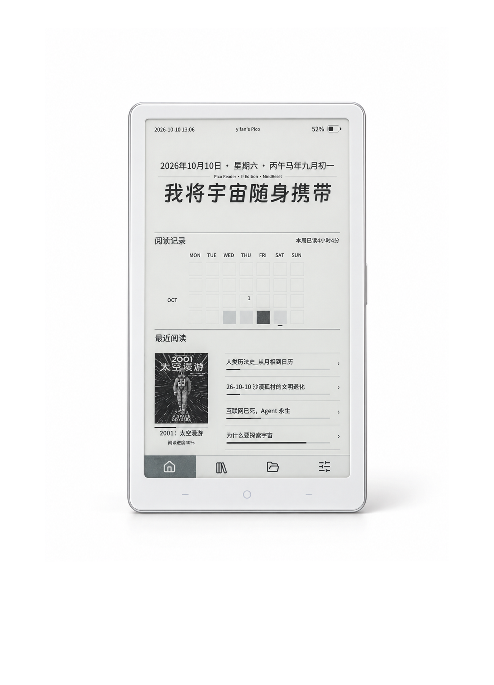

版本 0.3.3-rc83-if.7 · 仅适用 Pico RDP-G01-W
基于 Pico Reader 0.3.3-rc83 的独立衍生版本，增加坚果云同步和 Markdown 阅读，并调整首页与操作界面。if.7 更新同步提示、USB 图标和传书名称。
IF 项目源码 · if.7 对应源码与构建说明 · 源码 ZIP · 版本页面

在线安装无需安装 Python 或刷机工具。请先备份重要数据；首次从原版迁移会重写分区表，原版内置存储数据不保证保留。
0.3.3-rc83-if.7。正在加载在线安装按钮…
在线安装使用 ESP Web Tools。
PORT 换成实际串口名。Mac 通常为 /dev/cu.usbmodem…，Windows 在设备管理器查看 COM…。Mac 安装工具：python3 -m pip install esptool==5.4.0
Mac 写入：
python3 -m esptool --chip esp32s3 --port PORT --baud 460800 --before default-reset --after hard-reset write-flash @flash_argsWindows 使用同一命令，将 python3 换成 py。连接不稳定可将波特率改为 115200。保持包内目录结构，勿添加擦除命令；本机型没有 BOOT/RESET 物理按键。
等待四段写入与校验完成，重启后检查当前版本为 0.3.3-rc83-if.7，确认界面可响应。flash_args 来自同版构建：0x0 引导器、0x8000 分区表、0xd10000 OTA 初始数据、0x10000 应用，dio / 80m / 16MB。
Pico-IF-update.bin 复制到 TF 卡根目录，替换旧同名文件，安全弹出后插回 Pico。原版 Pico Reader 的 TF 升级不接受 IF 镜像，首次请使用上方在线安装或备用 USB 完整安装。
首次解压资源包，将 TF卡资源 内的 fonts 和 system 文件夹合并到卡根目录。最终应有 fonts/PicoSans-Medium.ttf 和 system/ime/pinyin.ifdict，并保留随附许可文件。资源包只含固定授权标准字体和离线词库。
在文件页进入坚果云同步，填写自己的账号、应用密码及阅读目录，刷新后选择文档下载，再从内容页离线阅读。不要公开密码或含凭据的设置备份。下载包不含账号配置。
应用镜像 SHA256：0a2334eb5eb822d5e86cc675f892ac4280855ff7bf1e67c8b94db5e967a8290b